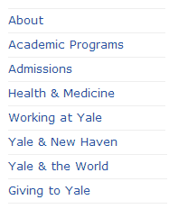

关于网站导航
导航栏是网站最重要的设计元素：
- 引导用户访问首页之后的页面
- 给用户方位感的奇妙工具
一个网站的不同页面使用同一导航条，方便不同页面之间的跳转之外，也是网站风格统一的标识。
网站导航一览
|  | ||
网站导航的设计
- 确定网站所有内容，正确分析和组织成符合逻辑的、高效的结构。
- 导航栏中的项目不宜过多
- 导航栏中的链接项数5~8为最佳，也正好适合网页宽度；
- 太多的链接选择会影响浏览者判断，可读性变差，可能会超出页面的宽度。
- 项目用语简洁
- 导航栏中使用精确明了的词语。避免过长。
- 尽量使用约定俗成的词语，比如“联系我们”，而不用“取得联系”。
- 正确排布

CSS链接样式
CSS超链接设置
设置页面CSS超链接样式
|
CSS超链接标记
| a { font-size: 16px; color: #000; } a:link { text-decoration: none; } a:visited { color:#666; text-decoration: none; } a:hover { text-decoration: underline; } a:active { text-decoration: none; color: #FFF; } |
a：关于超链接字体颜色等基本的设置 CSS提供了四种a对象的伪类：
下划线说明：
注意顺序：“爱恨原则”（LoVe/HAte），即四种伪类的首字母:LVHA。 |
练习1：用表格布局，制作如下样式超链接导航。
| Home | Games | Puzzles | Tell me | Activities |
图像翻转链接
设计步骤
|
.menu2{ |
练习2：设计一组图像翻转超链接（参考样式如下）。
| Home | Games | Puzzles | Tell me | Activities |
项目列表导航
项目列表
HTML提供了项目列表：顺序式列表<ol>和无顺序列表<ul>。当引入CSS后，项目列表被赋予了很多新的属性，甚至超越了它最初设计时的功能。
项目列表
顺序列表 |
无顺序列表 | ||
|
<ol> <li>薰衣草</li> <li>罗勒</li> <li>百里香</li> <li>鼠尾草</li> <li>薄荷 </li> </ol> |
|
<ul> <li>香草 <li>薰衣草</li> <li>薄荷 </li> <li>其他植物</li> </ul> |
列表符号的更改
- list-style-type属性——修改项目列表符号
- List-style-image属性——图像符号
|
.ul{ list-style-type:none; text-align:center; } .ul li{ width:180px; height:40px; display:block; border:solid 1px #F00; } |
项目列表导航
竖式导航条
设计步骤：
|
橫向导航栏
大多数的网站导航是水平方向上显示的，即为橫向的导航栏。
横竖转换步骤：
- .bar设置整个导航栏的宽度
- .bar li调整每个链接块的宽度，设置float为left
练习3：用项目列表制作竖式和横向的网站导航。

YaleCS页面完善
- 横幅导航栏由项目列表制作
- 可以忽略右上角的search框
- 布局和制作可参考第七回
| Last | Home | Next |
©2012-2018 Yang Peili. All rights reserved. contact me